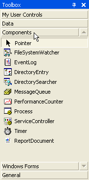
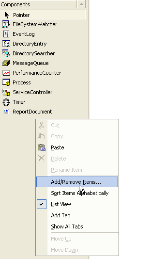
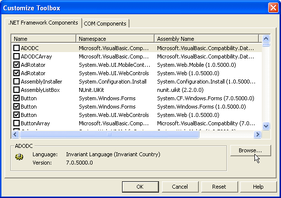
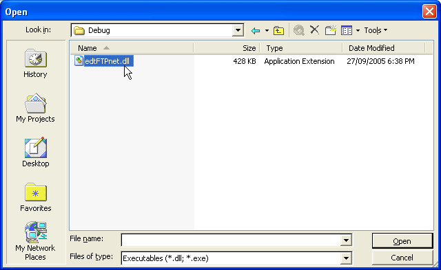

Installing FTPConnection in Visual Studio
The following steps vary slightly between different versions of Visual Studio. Similar steps
apply to SharpDevelop.
1. Adding FTPConnection to the Visual Studio Toolbox
In order to be able to drop an FTPConnection onto a Windows form, it
must first be added to the Toolbox.
- Open the Components panel of the Toolbox:

- Right-click on a blank part of the Components panel and
select "Add/Remove Items..." from the drop-down menu:

- Click the "Browse..." button in the Customize Toolbox
dialog:

- Select the edtFTPnet DLL from the file dialog and press
"Open":

- Click OK in the Customize Toolbox dialog and you should now
see that FTPConnection has been added to your Components Toolbox panel: